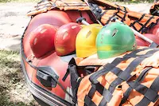
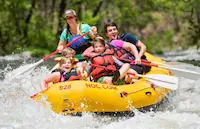
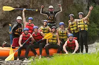
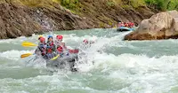
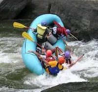

History

WhiteWater Travel Rafting Fun was founded in 2025 by Kimberly Hendricks. Kim's love of the outdoors and passion for adventures led her to start the company with the goal of sharing her love for the thrill of rafting. Since then, Travel Rafting Fun has grown into one of the premier rafting companies in the world, with trips available on six continents. Our commitment to safety, customer service, and environmental stewardship has earned us a reputation as a leader in the industry.
Adventure Awaits You
Whether you're an experienced rafter or a first-timer, Travel Rafting Fun has the perfect trip for you. Our expert guides will take you on an unforgettable journey down some of the most beautiful rivers in the world. From the calm waters of the Colorado River to the adrenaline-pumping rapids of the Zambezi, we have a trip that's perfect for you. Contact us today to book your next rafting adventure!






Family Fun
Looking for a fun and exciting adventure for the whole family? Travel Rafting Fun offers family-friendly trips that are perfect for kids of all ages. Our experienced guides will take you on a safe and enjoyable journey down some of the most beautiful rivers in the world. Whether you're looking for a relaxing float trip or an adrenaline-pumping whitewater adventure, we have the perfect trip for your family. Contact us today to book your next family rafting adventure!
Beautiful Trails
WhiteWater Travel Rafting Fun offers trips on some beautiful rivers in the world. From the crystal-clear waters of the Colorado River to the lush rainforests of the Amazon, we have a trip that's perfect for you. Our experienced guides will take you on an unforgettable journey down some of the most beautiful rivers in the world. Contact us today to book your next rafting adventure!
Fun for Everyone
WhiteWater Travel Rafting Fun offers trips for all skill levels, from beginners to experts. Our experienced guides will take you on an unforgettable journey down some of the most beautiful rivers in the world. Whether you're looking for a relaxing float trip or an adrenaline-pumping whitewater adventure, we have the perfect trip for you. Contact us today to book your next rafting adventure!
Beginner Trips
Never been rafting before? No problem! Travel Rafting Fun offers trips for beginners that are perfect for first-timers. Our experienced guides will teach you everything you need to know to have a safe and enjoyable trip down the river. Whether you're looking for a relaxing float trip or an adrenaline-pumping whitewater adventure, we have the perfect trip for you. Contact us today to book your first rafting adventure!
Expert Trips
Are you an experienced rafter looking for a new challenge? WhiteWater Travel Rafting Fun offers expert trips that are perfect for experienced rafters. Our experienced guides will take you on an adrenaline-pumping journey down some of the most challenging rivers in the world. Whether you're looking for a technical run or a big water adventure, we have the perfect trip for you. Contact us today to book your next expert rafting adventure!